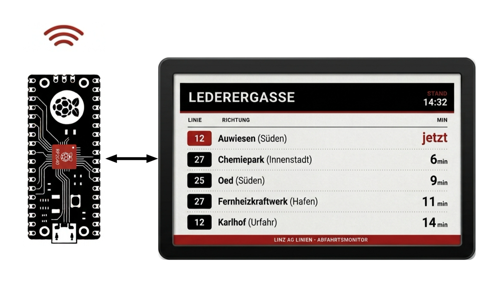

Public Transit · DIY Project
Linz AG Departure Dashboard

Concept sketch — a Raspberry Pi Pico W drives a 7.5" red/black/white e-paper panel mounted at the Lederergasse stop, fetching live departures over Wi-Fi from Linz AG's public API.
A personal real-time departure board for Linz's public transport network (trams & buses operated by Linz AG) — built to glance at upcoming departures at a stop from home, instead of checking the app every time.
Major Challenges
- Streaming JSON under a tight memory budget — the Pico W has 264 KB of SRAM, and the two display framebuffers alone use ~94 KB of that, permanently. The API's raw response is ~90–100 KB, so parsing it with a standard JSON parser would need roughly that much again — too risky alongside TLS and interpreter overhead. Instead, the response is read in small chunks and only the 5 needed fields are pulled out on the fly, peaking at ~4 KB of working memory instead of ~99 KB — verified byte-identical to a full JSON parse across several chunk sizes.
- Full refresh instead of partial — the e-paper driver has a partial-refresh mode, but it proved unreliable on this panel, so every update is a full ~15–20s redraw instead.
- Freshness vs. flicker — refreshing every 60 seconds means the panel is visibly redrawing for a quarter to a third of every minute. A deliberate trade of visual calm for up-to-date departures, at a known cost to panel wear. Another option would be to trigger the display on demand with a button instead — show the departure times for 60 seconds, then turn the panel off (or switch to a static image) so the refresh flicker isn't a constant distraction.
- No real-time clock — the Pico has no battery-backed clock and MicroPython has no timezone database, so time comes from NTP in UTC and gets shifted to local time with a fixed offset that has to be flipped by hand twice a year for daylight saving.
Draft placeholder — first implementation, not yet verified on real hardware.
← Back to iAlmirPro.Home